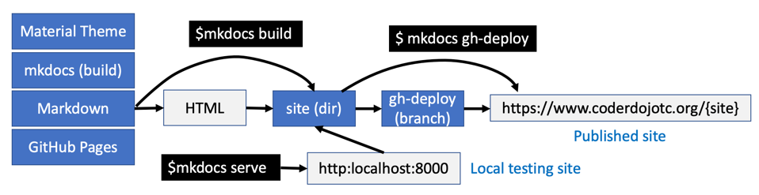

CoderDojo Content Authoring Glossary of Terms¶
Build Process¶
A standardized process of compiling and transforming various structures to produce usable artifacts.
Within CoderDojoTC authoring system to convert Markdown format into HTML.
A sample of the build process is shown in the figure below:

Concept Cards¶
Small laminated cards that sit on central tables that are visible as students walk into a CoderDojo classroom. Students quickly scan the tables for new concepts they want to learn, pick up the cards and then go to a computer workstation to learn the concepts.
Concept Cards (also known as Sushi Cards) contain a single concept that students can learn.
See the document Designing Concept Cards for details.
- Also known as: Sushi Cards
Concept Glossary¶
A web page or set of web pages that display the key concepts for a coding group.
Mentors can quickly review concepts with students to check what concepts they are familiar with before we begin our mentoring sessions.
Concept glossaries are also designed to work with Concept Cards and each concept can be easily linked from our standardized Markdown formats.
In addition to publishing easy to use concept cards, CoderDojoTC is building an integrated network of concepts for teaching computer science. Many of our content sites are building concept glossary pages which are initially flat lists of concepts for a topic.
Markdown¶
A lightweight markup language that you can use to add formatting elements to plaintext text documents.
Markdown is the most popular format used by software developers for creating and maintain web content and documentation.
In 2020, all our CoderDojoTC content started being migrated to standardized Markdown formats. We use mkdocs to tranform Markdown into HTML for publishing our content.
- See also: Markdown web site
- See also: mkdocs
Material¶
A open source design system that helps teams build high-quality digital experiences.
Material is not just a web user interface library. It attempts to cover high-level visual presentation guides for multiple media including mobile, web and other visual experiences.
Material was originally created by Google and then donated to the open source community.
In 2020, CoderDojoTC content authors voted to standardize on using Material and Material Components for all our content sites.
- See also: Material for mkdocs
Material Components¶
A library of user interface components that use the Material style guidelines.
In 2020, CoderDojoTC content authors voted to standardize on using Material Components for all our content sites.
- See also: Material Components
mkdocs¶
A python-based build system that converts Markdown format into HTML format within a web site.
Mkdocs is powerful, extensible and widely used by software developers to maintain documentation.
Mkdocs also builds index files that allow every site to have it's own mini-search system without depending on expensive search indexing servers.
- See: mkdocs web site